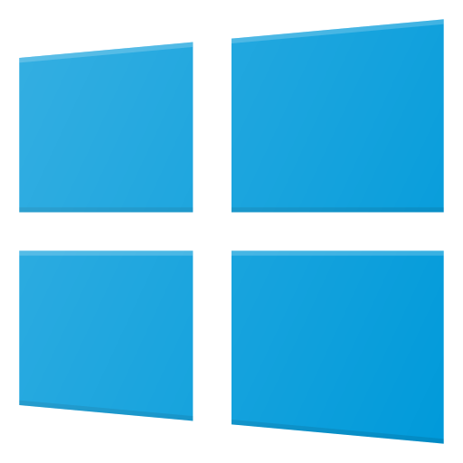

Window 🔒
Aventages :
- 💻 Assez intuitif
- 🮠Le seul OS vraiment stable et prévu pour le gaming
- 📲 La plupart des logiciels et applications sont disponibles
- 🧖‍♂️ Assez grand support materiel
Inconvénients :
- 👾 Passoire à virus
- 💸 Lisence assez chère
- 💠Enorme utilisation de ressourse
- 🧖‍♂️ Mise à jour imposé/obligatoire